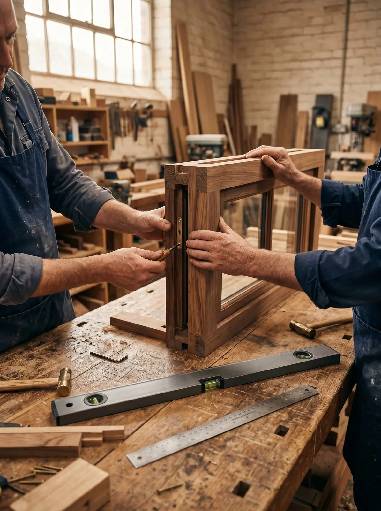

Non assembliamo cataloghi. Costruiamo soluzioni.
Le tue finestre nascono nella nostra officina di Vigano di Gaggiano.
Lavoriamo profili grezzi di partner selezionati e li trasformiamo in serramenti finiti: telaio, anta, ferramenta, vetro, sigillatura.
La persona che progetta il tuo infisso lavora a pochi metri da chi lo costruisce e da chi lo monta. Se qualcosa va corretto, si corregge in officina, non al telefono con un fornitore lontano.
I sistemi arrivano da partner che conosciamo da anni: Twin System, Alko e Geal per l'alluminio e le persiane, Alfacan e Rehau per PVC e termofibra, Aluter per l'alluminio-legno.

Qui si taglia, si assembla, si controlla.
Quando vieni in showroom, la produzione è a pochi passi: puoi vederla.
Come nasce il tuo infisso.
Taglio.
I profili grezzi dei partner arrivano in barre e si tagliano a misura, con angoli a 45° per telaio e anta.
Assemblaggio.
Si uniscono telaio e anta, si inseriscono guarnizioni e taglio termico, si monta la ferramenta.
Vetro.
Si posa la vetrocamera scelta per la tua casa: doppia, tripla, acustica o antisfondamento.
Controllo.
Ogni serramento si apre, si chiude e si regola prima di uscire. Poi parte con i nostri posatori.
Perché un produttore ti toglie pensieri?
Quando un pezzo si rompe tra qualche anno, un rivenditore deve chiederlo a chi l'ha fatto: a volte arriva dopo mesi, a volte non arriva. I serramenti che costruiamo noi li ripariamo noi, con i ricambi della nostra officina.
È meglio rivolgersi a chi i serramenti li fabbrica.Paolo C. · Recensione Google